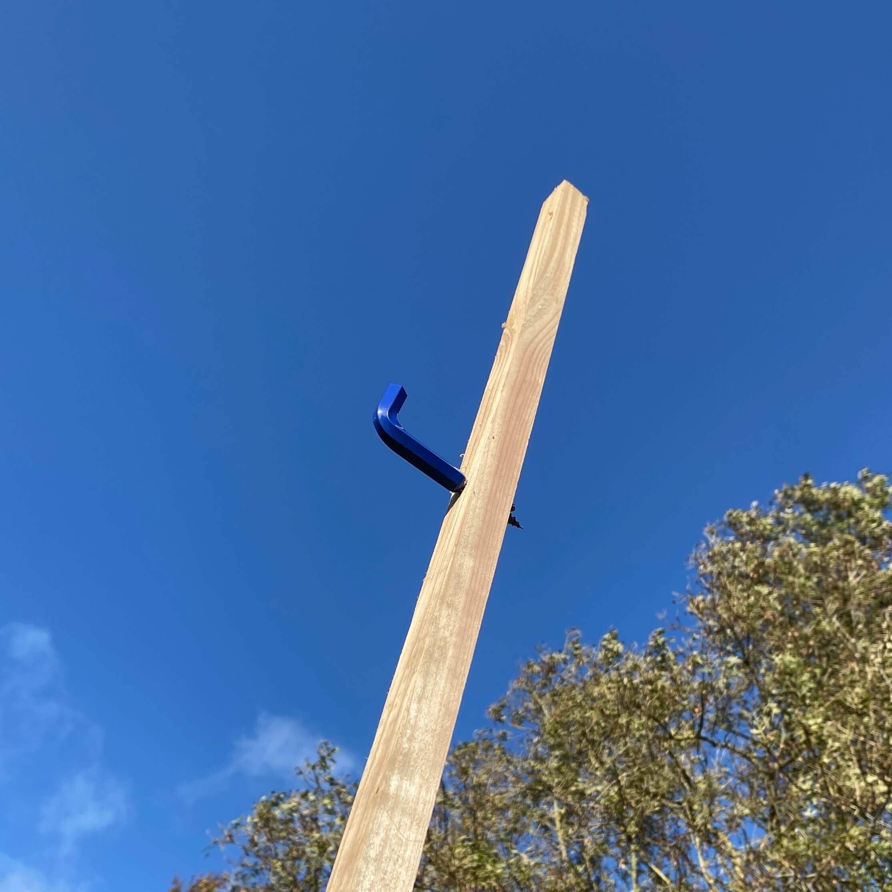
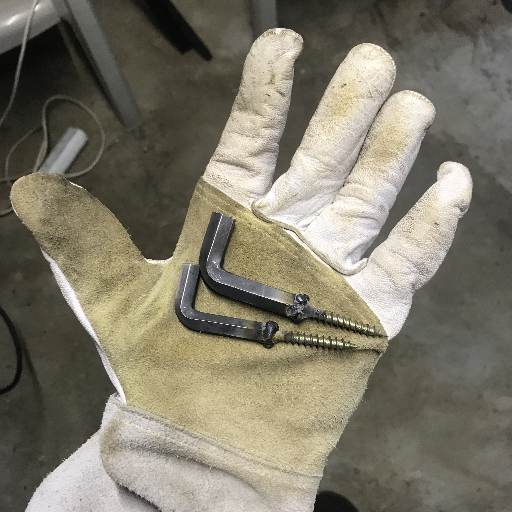
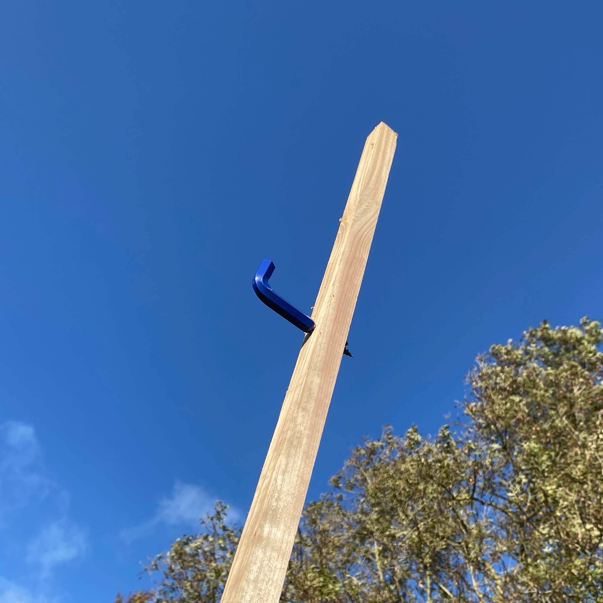
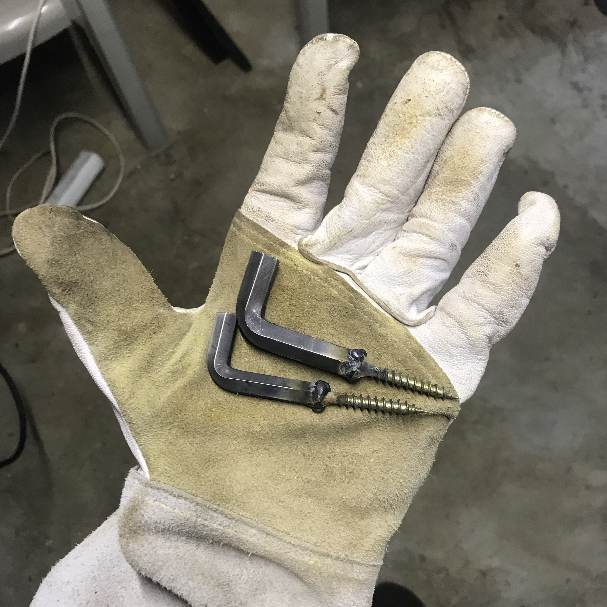

Allen hooks
A tool as a new tool.
Con los allen hooks pretendo dar una nueva perspectiva a un objeto que todos conocemos. He reinterpretado su función convierténdolos en perchero, respaldándome en su forma, que me recuerda a una escarpia en forma de 'L'.
Cada allen ha sido soldada a un tornillo, lijada, pintada y barnizada. Puedes comprarlos en el pack de 3 tamaños diferentes o por separado.
Por si hay dudas sobre cuánto peso aguantan me colgué de uno y ni se inmutó.
Los objetos bajo pedido como este están sujetos a la disponibilidad de los materiales necesarios. Si deseas realizar un encargo escríbeme primero a j@vigasworks.com (o haz click en 'escríbeme' un poco más abajo) y valoraremos las diferentes opciones posibles. Siempre estoy abierto a debatir ideas y a escuchar sugerencias.
Llaves allen de acero de 10, 8 y 6mm
Color Ral 5002
Objeto bajo pedido
15€/ud. o 40€/pack de 3ud.


 


